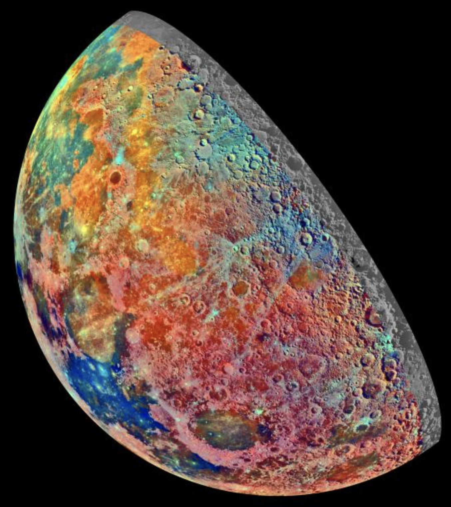
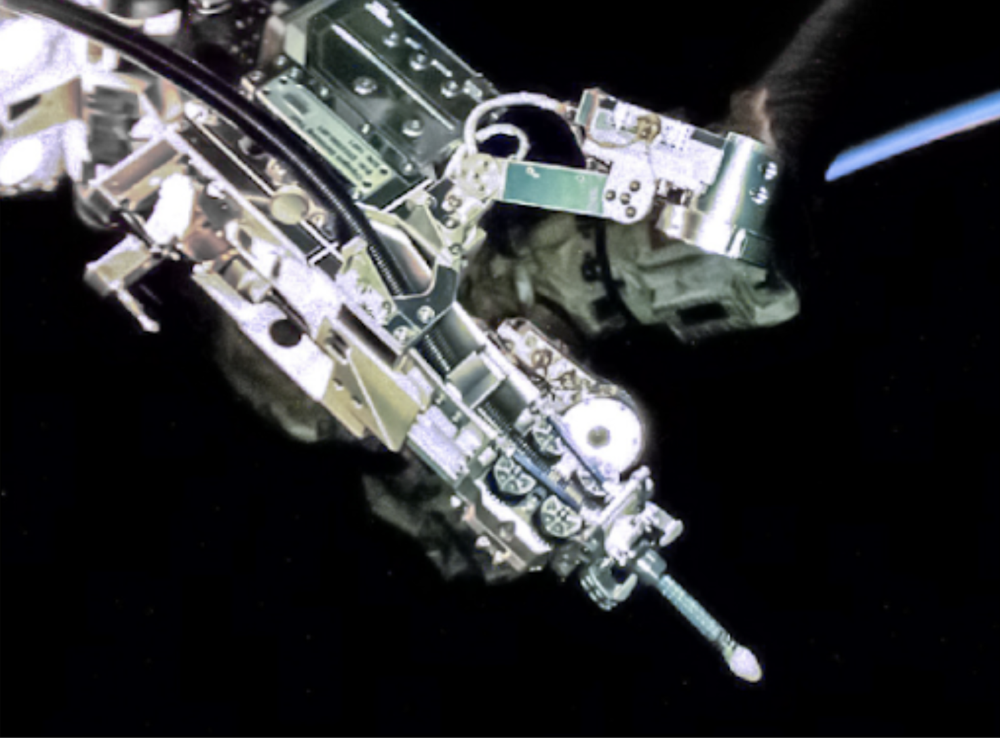

Large capacity fuel depots enable interorbit mobility and cis-lunar shuttling
There is more than one space station in orbit around Earth. In-space travel between the two affords shared resources and mutual safe havens in the event of a malfunction or catastrophic space-debris impact. Multiple crew-transport vehicles are also available. Fuel depots of “storable” propellant are now commonplace [ref node] but need to grow to meet the increasing demand of on-orbit crewed transport and station boosting.
The cis-lunar infrastructure has also been growing with lunar transport, communications, and surface power coming on-line. Astronomical observatories are planned to take advantage of the lunar 14-day night and the Moon’s lack of atmosphere. Crewed moon bases are under construction as international governments and commercial ventures pursue lunar resources like hydrogen, water, metals, and He3.
Superimposed color represents compositional variations on the Moon. Photo Courtesy of NASA/JPL-Caltech.
Trans lunar injection (leaving Earth’s orbit on a trajectory to the Moon) requires more efficient “cryogenic” propellant (oxidizer and fuel stored at temperatures below 120 K or -150°C). Supplying this propellant on-orbit is more economical than building new pre-fueled transports (to replace the depleted shuttles). Supplying cryogenic propellant (liquefied oxygen, methane, and hydrogen) on-orbit also allows for launches of just payload that a transport picks up after refueling, negating the need to build bigger rockets that carry the transport, payload, AND propellant.
As the frequency of flights to the moon increases, the demand for shuttling outpaces the rate at which new shuttles can be built. Launch economics afforded by the growing inexpensive launch providers allow for cryogenic propellant to be delivered to orbit. New advances in “zero-boiloff” technologies prevent them from vaporizing and allow long term storage on-orbit.
Robotic Refueling Mission (RRM) technology demonstration of Cryogen Servicing Tool (CST) in space during operations in 2020. Photo courtesy of NASA.